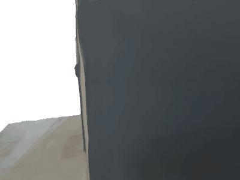

<!-- You must include this JavaScript file -->
<script src="https://assets.crowd.aws/crowd-html-elements.js"></script>


<script>
    function run_this_function() {
        ok = false
        if (!(document.getElementsByName("strongly_agree")[0].getAttribute("aria-checked") == "true" ||
            document.getElementsByName("agree")[0].getAttribute("aria-checked") == "true" ||
            document.getElementsByName("neither")[0].getAttribute("aria-checked") == "true" ||
            document.getElementsByName("disagree")[0].getAttribute("aria-checked") == "true" ||
            document.getElementsByName("strongly_disagree")[0].getAttribute("aria-checked") == "true")) {
            errorBox.innerHTML = '<crowd-alert type="error" dismissible>You must select one option.</crowd-alert>';
            errorBox.scrollIntoView();
        } else
            ok = true
        return ok
    }
</script>
<!-- For the full list of available Crowd HTML Elements and their input/output documentation,
      please refer to https://docs.aws.amazon.com/sagemaker/latest/dg/sms-ui-template-reference.html -->
<style>
    .body {
        padding-top: 10px;
        /*padding-bottom: 20px;*/
        /*border:1px solid black;*/
        max-width: 1400px;
        justify-content: center;
        margin: auto;
    }

    .claim {
        font-size: large;
        margin-top: 40px;
    }

    .detailed_guideline {
        text-align: end;

    }

    .gif-container {
        display: flex;
        flex-wrap: nowrap;
        /*justify-content: center;*/
        margin: auto;
    }

    .left-container {
        margin-top: 20px;
        padding-left: 10px;
        padding-right: 20px;
        /*border:1px solid black;*/
    }

    .right-container {
        margin-top: 20px;
        padding-left: 20px;
        padding-right: 10px;
        /*border:1px solid black;*/
    }

    .submit-button {
        text-align: right;
        display: block;
        /*margin-right: 30px;*/
        margin-top: 50px;
        padding-bottom: 30px;
    }

    .gif-images {
        width: 45vw;
        max-width: 640px;
        min-width: 200px;
    }

    img {
        object-fit: cover;
    }

    #question {
        max-width: 780px;
        margin-top: 20px;
        margin-left: auto;
        margin-right: auto;
        text-align: center;
        padding-top: 5px;
        background-color: rgb(241, 255, 250);
        border: 2px solid rgb(0, 187, 115);
    }

    .options {
        padding-left: 70px;
        text-align: left;
    }

    @media all and (max-width: 980px) {
        .detailed_guideline {
            float: none;
        }

        .gif-container {
            padding-top: 20px;
            display: flex;
            flex-wrap: wrap;
            flex-direction: column;
        }

        .left-container {
            padding: initial;
            padding-bottom: 20px;
            margin: auto;
            text-align: center;
        }

        .right-container {
            padding: initial;
            margin: auto;
            padding-top: 0px;
        }

        .gif-images {
            width: 90vw;
            max-width: 640px;
            min-width: 200px;

        }
    }


</style>


<!-- You must include crowd-form so that your task submits answers to MTurk -->
<crowd-form answer-format="flatten-objects" onsubmit="return run_this_function()">
    <div id="errorBox"></div>
    <div class="body">
        <div class="gif-container">
            <div class="left-container">
                <!--         -->
                
            </div>
            <div class="right-container">
                <div class="detailed_guideline">
                    <crowd-instructions link-text="Detailed instructions" link-type="button">
                        <short-summary>
                            <p>
                                A human-scene interaction is presented in the image. Is the <b>human</b> interacting <b>very
                                naturally</b> with the scene?
                            </p>
                        </short-summary>
                        <detailed-instructions>
                            <p>
                                Imagine that you observe a human interacting with the environment as presented in the
                                image. You must decide if such interaction could be considered very natural.
                                <br/>
                                You can decide it by pondering the following support questions:
                            <ul>
                                <li><b>Is it affordable to interact with the environment in that way? </b><br/><br/>
                                    You <b>should not use social biases</b> like "Tables are not for humans to be
                                    sitting" or "He should not be standing up on the bed" or "The floor of a room is
                                    only for standing and walking, not for laying".<br/><br/>
                                </li>
                                <li><b>Is this a possible situation?</b><br><br/>
                                    When we perform actions in an environment, physical rules apply to such
                                    interactions.
                                    For example, we can not walk through a solid wall nor stand up at a room's ceiling.
                                </li>
                            </ul>
                            </p>
                        </detailed-instructions>
                        <positive-example>
                            Very natual interaction
                            <p>
                                <!--                -->
                                

                            </p>
                            <p>
                                This interaction:
                                <ul>
                                    <li>Show a human sitting on the environment correctly</li>
                                    <li>Interaction is  physically plausible and valid, then natural</li>
                                </ul>
                            </p>
                        </positive-example>
                        <negative-example>
                            Not natural interaction
                            <p>
                                <!--                            -->
                                

                            </p>
                            <p>
                                This interaction:
                            <ul>
                                <li>Shows an interaction no physically plausible, then not natural</li>
                                <li>It is not affordable interact with the environment this way</li>
                            </ul>
                            </p>
                        </negative-example>
                    </crowd-instructions>
                </div>
                <div class="claim">
                    <p>
                        <b>Claim</b>: The <b>human</b> is interacting <b>very naturally</b> with the scene.
                    </p>
                    <p>
                        <b>What is your opinion?</b>
                    </p>

                </div>
                <div id="question">
                    <div class="options">
                        <crowd-radio-group>
                            <crowd-radio-button name="strongly_agree">5. Strongly agree</crowd-radio-button>
                            <br/>
                            <crowd-radio-button name="agree">4. Agree</crowd-radio-button>
                            <br/>
                            <crowd-radio-button name="neither">3. Neither agree nor disagree</crowd-radio-button>
                            <br/>
                            <crowd-radio-button name="disagree">2. Disagree</crowd-radio-button>
                            <br/>
                            <crowd-radio-button name="strongly_disagree">1. Strongly disagree</crowd-radio-button>
                        </crowd-radio-group>
                    </div>
                </div>
                <crowd-button form-action="submit" class="submit-button" variant="primary">
                    Submit
                    <iron-icon icon="icons:thumb-up"/>
                </crowd-button>
            </div>
        </div>


    </div>
</crowd-form>
